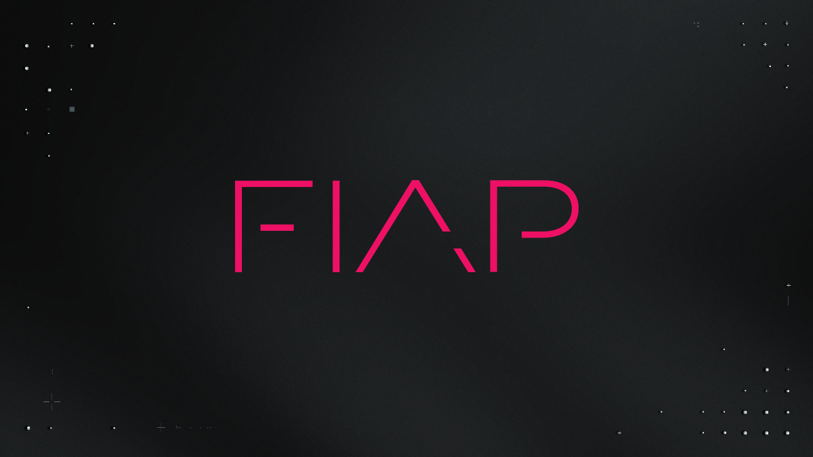
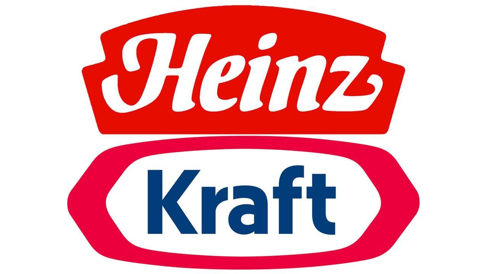
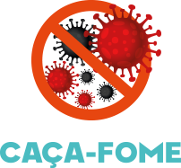

Nossas Parcerias
Microsoft
A agricultura sustentável é aquela que respeita o meio ambiente, é justa para a sociedade e, também, economicamente viável. Ainda, deve garantir que as

FIAP
A agricultura sustentável é aquela que respeita o meio ambiente, é justa para a sociedade e, também, economicamente viável. Ainda, deve garantir que as

Kraf Heinz
A agricultura sustentável é aquela que respeita o meio ambiente, é justa para a sociedade e, também, economicamente viável. Ainda, deve garantir que as

Caça-Fome
A agricultura sustentável é aquela que respeita o meio ambiente, é justa para a sociedade e, também, economicamente viável. Ainda, deve garantir que as